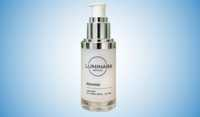

Luminara Rewind Scam or Legit? The Shocking Truth Exposed (2026 Review)

Click Here to Check Official Batch Availability →| Product Name: | Luminara Rewind |
| Editorial Score: | 4.8 / 5.0 ⭐⭐⭐⭐⭐ |
| Primary Purpose: | Targeted Bioactive Health & Vitality Formula (Natural Health & Dietary Supplement) |
| Manufacturing / Delivery: | c-GMP Certified, FDA-Registered Facility (USA) |
| Guarantee Shield: | 100% Risk-Free Money-Back Guarantee |
| Official Portal: | Verified Direct Manufacturer Website → |
Luminara Rewind Reviews – Is It Worth It?
Luminara Rewind is a lightweight anti aging serum that helps lessen wrinkles, maximize hydration, and improve skin brightness and texture.
Key Safety Highlights
- Formulated with skin-friendly ingredients
- Free from harsh chemical processes
- Suitable for most skin types
- Patch test recommended for sensitive skin
What is Luminara Rewind?
Luminara Rewind is an advanced anti aging skincare serum created to support smoother, brighter, and healthier-looking skin.
It is formulated to help lessen the appearance of wrinkles, fine lines, and dullness by improving skin hydration and elasticity.
With a blend of peptides, vitamins, and hydration boosting compounds, the formula works with the skin’s natural renewal process rather than masking surface issues.
Regular use may help improve texture, firmness, and overall radiance. It is suitable for daily application and fits easily into morning or evening routines.
The lightweight formula absorbs quickly without leaving residue, making it ideal for both men and women who want a simple and efficient skincare solution.
The Science Behind Luminara Rewind
Luminara Rewind is formulated to support the skin’s natural renewal process by focusing on how the skin repairs and regenerates itself over time.
As aging progresses, the cycle of cell turnover becomes slower, causing a buildup of old cells on the surface.
This leads to dullness, uneven tone, and the formation of fine lines. The formula works by encouraging a more balanced renewal cycle, helping the skin gradually replace older cells with newer and healthier ones.
Hydration is a key part of this process, as properly moisturized skin appears smoother, softer, and more elastic.
Maintaining moisture levels also helps strengthen the skin barrier, which safeguards against dryness and irritation.
In addition, the formula supports the skin’s ability to defend itself from daily environmental stress such as pollution and sun exposure.
By improving these core functions, the skin can appear firmer, clearer, and more refreshed with consistent daily use.
Luminara Rewind Ingredients
Collagen Peptides
Collagen peptides help support the skin’s structure and improve elasticity. They work to enhance firmness and lessen the appearance of fine lines over time. By supporting collagen levels, they contribute to smoother and more youthful-looking skin with regular use.
Syn Ake Peptide
Syn Ake peptide is known for its wrinkle-smoothing properties. It helps relax facial tension that can lead to expression lines. This supports a softer and more refined appearance, especially around areas prone to wrinkles such as the forehead and eyes.
Anti-Wrinkle Peptides
These peptides target visible signs of aging by reducing the effects of repeated facial movements. They help smooth out fine lines and improve skin texture. Over time, they support a more even and youthful appearance.
Ascorbyl Palmitate
A stable form of vitamin C, this ingredient helps brighten the skin and shield against environmental damage. It supports a more even tone and improves overall radiance while being gentle on the skin.
Vitamin C
Vitamin C is a high-potency antioxidant that helps shield the skin from external damage. It also supports collagen production and brightens the complexion, making the skin look fresher and healthier.
Fisetin
Fisetin is a plant-based antioxidant that helps shield the skin from oxidative stress. It supports long-term skin health and helps lessen the impact of aging factors caused by the environment.
Hyaluronic Acid
Hyaluronic acid deeply hydrates the skin by retaining moisture. It helps improve plumpness and smoothness, reducing the appearance of fine lines and dryness.
Sodium Acetylated Hyaluronate
This advanced form of hyaluronic acid penetrates deeper into the skin. It grants long-lasting hydration and strengthens the skin barrier, helping maintain softness and elasticity.
Vitamin E
Vitamin E safeguards the skin from damage caused by free radicals. It supports healing and helps maintain a smooth and nourished skin texture.
Alpha Tocopherol
This active form of vitamin E supports skin repair and enhances moisture retention. It contributes to overall skin health and protection.
Benefits
- Reduces Wrinkles and Fine Lines – Helps smooth visible signs of aging by supporting skin elasticity and structure over time.
- Improves Skin Hydration – Deeply hydrates the skin, making it look plumper, softer, and more refreshed.
- Enhances Skin Firmness – Supports collagen and elasticity, helping the skin appear tighter and more lifted.
- Promotes Smoother Texture – Encourages cell renewal, resulting in a refined and even skin surface.
- Boosts Radiance – Improves overall skin tone and brightness for a healthy, glowing appearance.
- Protects Against Damage – Antioxidants help defend the skin from pollution and environmental stress.
Pros
- Lightweight and fast absorbing
- Supports hydration and smoothness
- Suitable for daily use
- Helps improve skin brightness
- Contains well-known ingredients
- Works for men and women
- Easy to apply
- Complements skincare routines
- Non-greasy texture
- Backed by a refund policy
Cons
- Results require consistent use
- Only available online
- May not suit extremely sensitive skin
How to Use?
- Cleanse and Prepare Skin – Start by washing your face with a gentle cleanser to remove dirt, oil, and impurities. Pat dry with a soft towel, keeping the skin slightly fresh and ready for better absorption.
- Apply and Massage Gently – Take a small amount and apply evenly to the face and neck. Use upward circular motions to massage it into the skin, allowing the formula to absorb fully without leaving residue.
- Use Daily for Best Results – Apply consistently once or twice daily as part of your routine. Regular use helps improve hydration, smoothness, and overall skin appearance over time.
Why People Choose the Luminara Rewind?
- Focus on Deep Hydration – It helps maintain proper moisture levels, making the skin feel softer, smoother, and more refreshed throughout the day.
- Supports Skin Repair – The formula works with the skin’s natural renewal process, helping improve texture and overall skin health over time.
- Targets Visible Signs of Aging – It helps reduce the appearance of fine lines and wrinkles, promoting a more youthful and refined look.
- Simple Daily Routine – Easy to apply and fits seamlessly into morning or evening skincare routines without adding complexity.
- Lightweight and Non-Greasy Feel – Absorbs quickly into the skin without leaving a heavy or sticky residue, making it comfortable for everyday use.
- Gradual and Natural Looking Results – Delivers steady improvements with consistent use, helping the skin look healthier and more radiant over time.
Top Reasons the Luminara Rewind Is Trending
- Growing demand for anti aging solutions as more people seek smoother, youthful skin with simple daily care routines.
- Focus on hydration-based skincare that supports moisture balance, helping skin look plumper, softer, and refreshed daily.
- Use of peptides and antioxidants that help improve skin firmness while protecting against environmental damage and aging.
- Positive customer feedback and ratings show growing trust, with many reporting smoother texture and improved skin glow.
Who Should Use & Avoid Luminara Rewind?
✔️ Should Use
- Adults with signs of aging
- People with dry or dull skin
- Those seeking a smoother texture
❌ Should Avoid
- Individuals with severe skin allergies
- Those sensitive to active ingredients
- People with open skin conditions
Luminara Rewind Customer Reviews
Overall, the reviews of Luminara Rewind are mostly positive rating of 4.9/5 based on 2,000+ verified customer reviews.
Emily Johnson ⭐⭐⭐⭐⭐ Verified Customer
My skin feels smoother and more hydrated. Fine lines look softer and my face looks brighter after regular use.
Michael Brown ⭐⭐⭐⭐⭐ Verified Customer
The serum is lightweight and easy to apply. It improved my skin texture gradually and feels refreshing.
Sophia Williams, ⭐⭐⭐⭐⭐ Verified Customer
I noticed better hydration and glow. It takes time, but results are visible with consistent application.
Luminara Rewind Vs Others
Feature | Luminara Rewind | Other Products |
Ingredients | Peptides and vitamins | Limited blends |
Hydration | Deep hydration support | Basic hydration |
Texture | Lightweight serum | Often greasy |
Usage | Daily routine friendly | Inconsistent use |
Results | Gradual improvement | Temporary effects |
Money Back Guarantee
Luminara Rewind offers a 90-day money-back guarantee, giving enough time to evaluate results. This policy allows buyers to try the product without financial risk.
If the results are not satisfactory, a refund can be requested within the guarantee period.
This adds confidence and ensures that customers can make a purchase decision with clarity and calm.
The process is simple, and customer support is available to assist with refund requests.
Price Details
1 Bottle 30 Day Supply
- Regular price $119, now available at $69 per bottle. You save $50 and also get free shipping on your order.
3 Bottles 90 Day Supply
- Regular price $357 now reduced to $179 total, which comes to $59 per bottle. You save $178 with free shipping included.
6 Bottles 180 Day Supply Best Value
- Regular price $714, now available at $294 total, which is $49 per bottle. You save $420 along with free shipping.
Where to Buy?
Luminara Rewind is available through its official website. Buying directly ensures product authenticity and access to the latest offers.
It also grants secure payment methods and customer support.
Purchasing from the official source mitigates the risk of counterfeit products and ensures eligibility for the money back guarantee.
The website often includes bundle discounts and limited-time deals, making it the best place to get the product at a competitive price while ensuring safety and quality.
Conclusion
Luminara Rewind are mostly positive ratings of 4.9/5 based on 2,000+ verified customer reviews.
I highly recommend Luminara Rewind for customers seeking a simple and efficient way to improve skin health and lessen visible signs of aging.
This formula focuses on hydration, skin repair, and gradual enhancement of texture and brightness.
With consistent use, it supports smoother, firmer, and more radiant skin. The inclusion of peptides, vitamins, and antioxidants makes it a well-balanced solution for daily skincare routines.
Its lightweight texture and easy application make it suitable for both beginners and experienced skincare users.
The added assurance of a refund policy further strengthens confidence in trying the product.
For those looking to support long-term skin health and achieve a refreshed appearance, this product stands out as a reliable option worth considering.
.
.
.
.
.
.
.
.
Frequently Asked Questions
Is it safe for daily use?
Yes, it is made for daily use and works well for most skin types when applied as directed, helping maintain hydration, smoothness, and overall skin balance.
How long to see results?
Visible results may begin in a few weeks, while better improvements in texture, hydration, and brightness appear with consistent use over a longer period.
Can men use it?
Yes, it is suitable for both men and women who want to improve skin texture, hydration, and lessen visible signs of aging in a simple routine.
Does it feel greasy?
No, the formula is lightweight and absorbs quickly into the skin, leaving it feeling fresh, smooth, and non-sticky without any heavy or oily residue.
Can it reduce wrinkles?
It helps lessen the appearance of fine lines and wrinkles gradually by supporting skin elasticity and hydration when used regularly.
Is it suitable for sensitive skin?
It is generally gentle, but people with sensitive skin should do a patch test first to ensure compatibility and avoid possible irritation.
Does it improve skin glow?
Yes, it supports hydration and improves skin texture, helping the skin look brighter, smoother, and naturally more radiant with regular use.
.
.
.